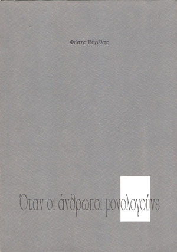

Στο πεζοδρόμιο
Αυτοί πού ρχονται απ’ αντίκρυ τους ξέρω.
Θα πούμ’ ένα ζεστό “καλημέρα” και θ’ αντιπεράσουμε.
Σε λίγα μέτρα θα γυρίσουν να δουν τα νώτα μου
Όπως θα κάμω κι εγώ για τα δικά τους.
Ωστόσο ούτε εγώ ξέρω ακριβώς αν με σχολιάζουν
Ούτ’ εκείνοι πιστεύω να υποψιάζονται
Ότι, αν πρόφτενα πριν με δούνε, θα ‘παιρνα την άλλη οδό.
Πέρασε ξαφνικά μια σκέψη απ’ το μυαλό μου
Μια ευχή. “Να μη βρεθεί ποτέ το εργαλείο εκείνο
Που θά πιανε τις σκέψεις των ανθρώπων”
Το μόνο που μας έμεινε δικό μας.
Να γυρνάμε βαθιά μας κι εκεί να κρυβόμαστε.
Φαντασθήκατε ποτέ την οδύνη
Να καταπατιόταν η ψυχή μας!
Να γδύνεται κι αυτή σε κοινή θέα
Όπως γδύνεται σήμερα το σώμα μας;